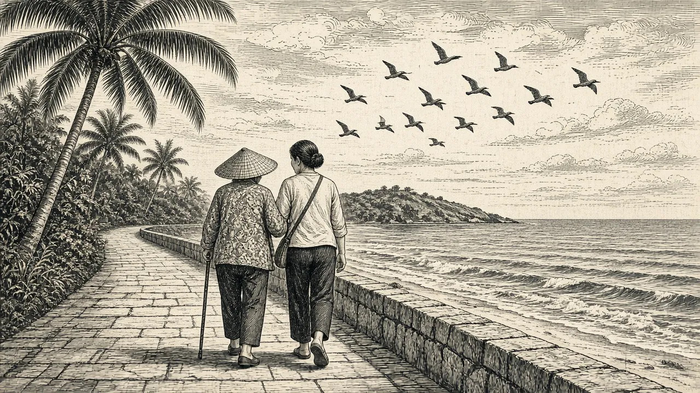
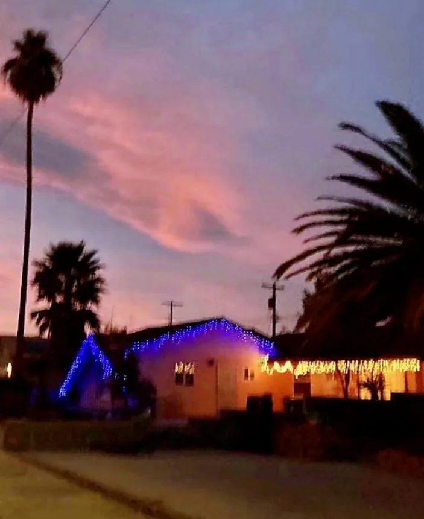

后记
我的生活平凡而简单，没有多少值得回忆的东西。十八年吃苦受累的东北生活和工作就是为了活命挣钱，养儿育女，传宗接代。等到办好调转返回山东，发现自己已经落后了几十年。大弟开玩笑说：“二姐呀，你怎么像出土文物，什么都不知道了？”我无话可说。其实在矿上我在宣教科工作，还能看到各种报纸、杂志，但毕竟远在边疆，信息闭塞。上班学毛选写心得，灵魂深处闹革命，狠批资本主义一闪念，胡思乱想也不敢，夹着尾巴做人吧。我感觉自己就是一部机器，不用动脑子想，党叫干啥就干啥。宣教科的工作是做党的喉舌，自己是党的传声筒，党叫说啥就说啥。每天下班回家，比上班还忙，忙吃忙穿忙家务带孩子，就像一只陀螺不停地转，忙得晕头转向。我们是八口之家，我们俩每月工资83.7（38.61+45.18）元，十年工资没变，生活水平堪比劳改犯。那年月，计划生育矿区还没执行，越穷越生，十年我生了四个娃。没有托儿所也无幼儿园，幸有公婆在帮我带孩子，我才能坚持上班。文革中，别人忙革命忙批判，忙着参加各自派别的集会游行，我不参加这些活动，情愿做骑墙派。任凭别人指指点点批评教育，我仍然不在乎不积极，抽空回家忙家务带孩子。文革后期，抓革命促生产了，我的档案关系转到矿上，承认了我是在籍国家干部，才具有参加各种政治活动的资格。
一九七八年冬天，全家人从东北返回山东老家。当时是走的教育口，潍坊市户口不让进，教育局安排不下，是老爸亲自出马去找了老朋友崔熙瑶帮忙。崔正在筹办卫生干部学校需要教师，见老上级来求他，高兴地去找他的朋友潍县县委文卫科主任孙任昊磋商。直到得知决定收留我们了，我这颗悬着的心才放下。初到卫校，先租住在齐家埠老百姓的房子，没水没电，一下回到了解放前。幸亏有娘家亲人们的帮衬，爸爸妈妈扶助，四个孩子都上了学。我得上班，还要每天做三顿饭，拉风箱烧煤炭，忙得我脚打后脑勺儿。熬了两年多，卫校的宿舍建好后我们搬到单位里住了，上班、生活才稍微方便了些。我们还参加了业余英语学习班学习英语。每个周六我尽量争取回娘家去看望父母，姐姐和弟弟妹妹节假日也凑到爸妈身边，欢欢乐乐，无限幸福。

我得上班，还要每天做三顿饭，拉风箱烧煤炭，忙得我脚打后脑勺儿。
在幸福的日子里时光过得特快。转眼到了一九八八年，儿子也上了大学。大弟弟高兴地对我说：“你的四个孩子都有文化，有出息，我的儿子范晨光将来就和你们孩子串在一串上。” 时间流逝，人生无常，没想到多年卧病在床的妈妈于八九年仙逝，大弟弟在九一年因车祸去世，九二年七月我也一病不起。妈妈生前曾警告我: “观察你的脸色不正常，你要注意身体啊。” 我也觉得浑身酸软无力，全身浮肿，关节疼痛，很不舒服。曾到自己工作的医院找保健大夫看过，心电图正常，透视拍片肺子也没毛病，大夫说是更年期综合症，等着吧，住几年自己就好了。西药、中草药用了不少，五花八门的方法治疗着，身体却越来越差，大夫们确诊不了。老父亲经不起连续不幸的打击，也于九四年逝世。父母都不在了，娘家没有了，自己一下子失去了主心骨，悲伤空虚，惊恐无助。我身心俱损，崩溃了，病倒了。自九二年七月我一病不起，卧床已经两年，几乎性命不保。
九六年儿子结婚了，在烟台工作安了家，邀请我们到烟台一起住。九八年初儿子到美国工作，五月大孙子出生了，幸有亲家多方面照顾帮助着，大人孩子平安旺相。久病的我依靠孩子们的辅助，在死亡线上苦苦挣扎。二零零零年儿媳和二女儿签证成功，一起带着大孙子到了美国。
二零零四年四月第二个孙子出生了。我的身体也恢复了许多，应儿子邀请签证，顺利地到了美国。在美国住了五年，与儿孙团聚，心情舒畅，身体得到更进一步恢复。
二零零九年九月，从美国回到中国烟台后，我因身体虚弱免疫力太差，原本的结节病没完全好，又感染了真菌。低能的开发区医院传染科大夫不懂得真菌和细菌的不同，采取了抵制细菌的治疗方案，杀菌药用了很多，病情却越来越重。住院的第三天，我自己感觉活不成了，心想死就死吧，指望孩子们是来不及了。幸好孩子们及时赶回来了。当天晚上当大夫的三姑娘废了住院大夫的治疗方案，亲自开处方，到毓璜顶医院去买了抗真菌的药，并马上给我打针用药。奇迹出现了：三天来不断的呕吐、泄肚子止住了，高烧痛疼得以缓解，下半夜我竟能躺着迷糊了一觉。第二天儿子匆匆从国外飞回，我知道又死不了啦。药用对了病回头，孩子们来了，他们有办法救我。我又有了不能死的念头，孩子们都还需要我活着，我不能放弃，得抗争！就这样我又活过来啦。为救我, 儿子拿钱，三女儿治病，大女儿日夜陪伴，在天津一住三年。
为了养病，孩子们劝我到海南越冬。二零一四年我在大女儿的辅助下，到了三亚，冬去春来，我们做了四年的候鸟。

冬去春来，我们做了四年的候鸟。
二零一八年九月十六日，二女儿帮我办理的美国签证通过，儿子陪我来美居住。
到了美国，遂了长久以来的心愿，细想起来，我也算是心想事成。八十多岁的人，又飘洋过海来到国外，尽管语言不懂，习惯不同，感觉又聋又瞎，但我心甘情愿。我有了私人空间，有了种菜养花的后院，不用应酬亲戚邻居，不需要面对繁杂的感情纠纷。我轻松愉快，自由自在，不愁吃喝，专心做自己喜欢的事儿，干自己所想干的活儿，远离了尘世的喧嚣，避开了无形的烦恼，在拉斯维加斯天堂县过着天堂般的日子，我已经心满意足了！

我有了私人空间，有了种菜养花的后院
二零二一年感恩节于拉斯维加斯完稿
